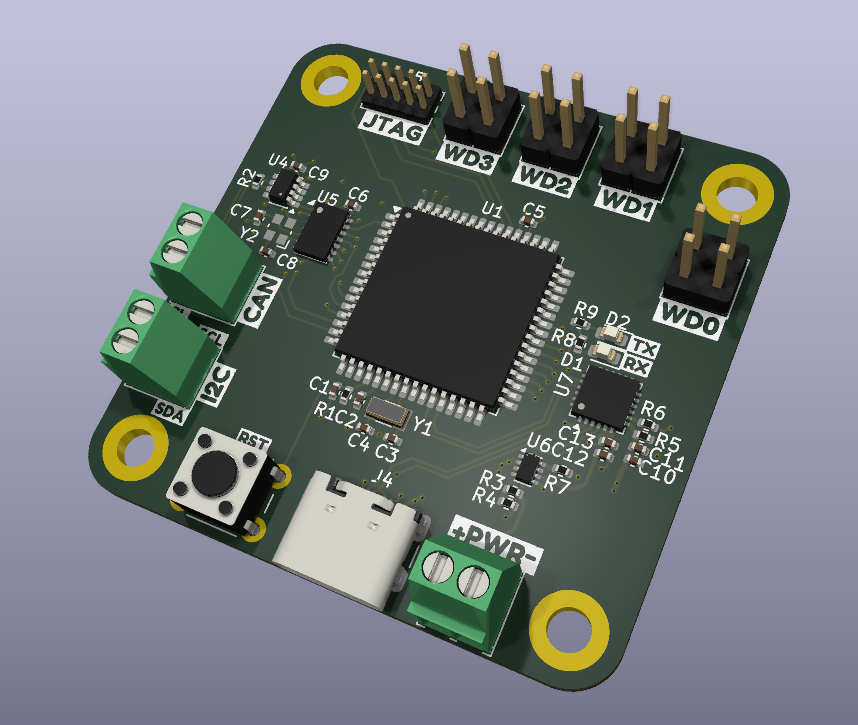
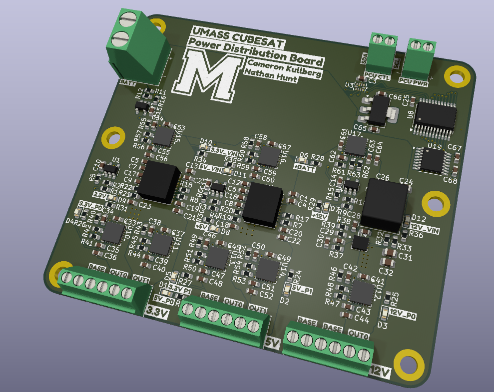
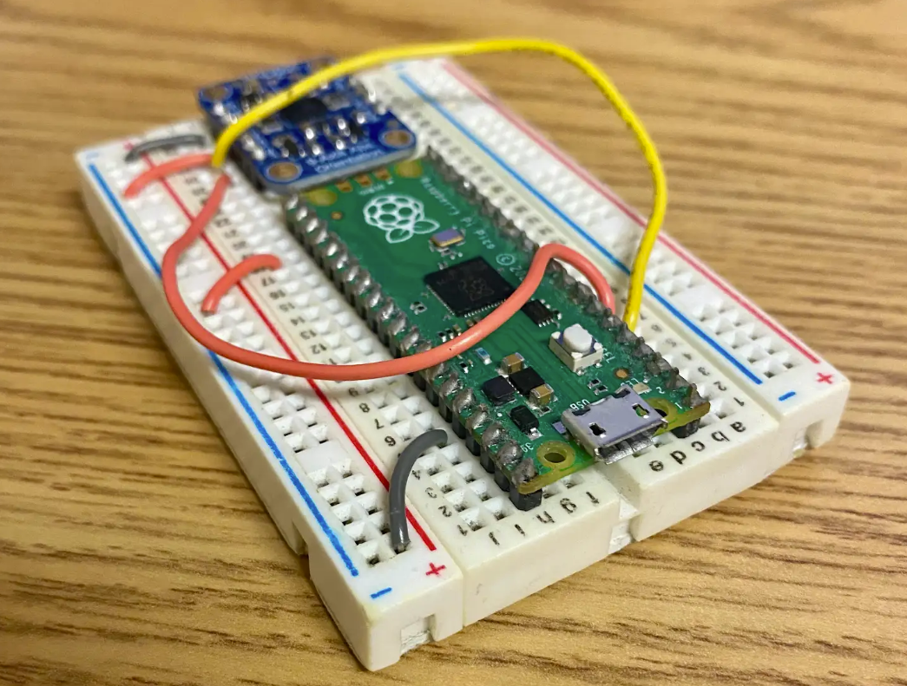
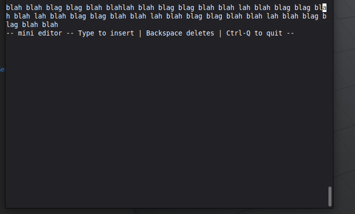

Power Controle Unit
FILLER
- FILLER
- FILLER
- FILLER
Embedded Systems · Low-Level Software · Hardware Integration
FILLER

FILLER

FILLER
Authored a research paper analyzing the radiation environment for a 3–5 year solar synchronous orbit and its effects on the battery management system and power distribution unit. Evaluated TID, SEE, and DDD threats, then prescribed component-grade and circuit-level mitigation strategies.
A collection of projects I've built to sharpen my skills.

Designed a complete BNO055 driver that configures I²C, unit selection, operation modes, axis remap/sign, and quaternion/Euler/vector reads. Packaged with CMake for the Pico SDK and tuned USB stdio logging to keep iteration fast.

A minimalist text editor that reads raw keystrokes, maintains a live on-screen buffer, and uses a linked-list core for near-instant cursor inserts and deletes. Built with robust boundary checks and a clean, extensible header/API. Microbenchmarked at ~0.05 µs per insert and ~0.02 µs per backspace (100k–500k operations, excluding rendering).